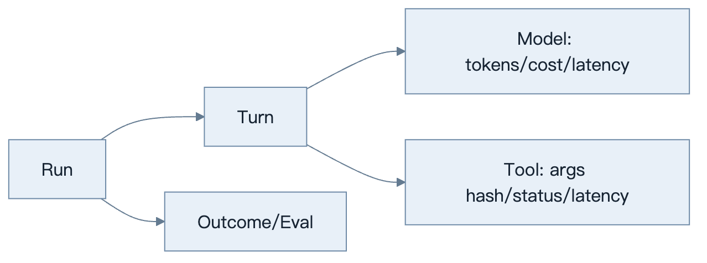
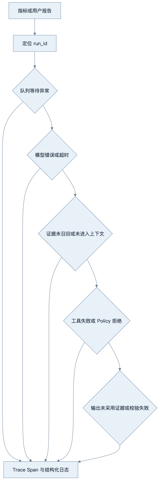
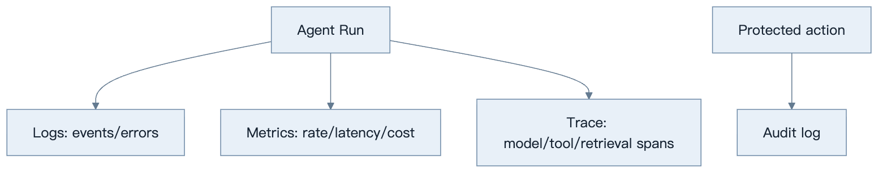
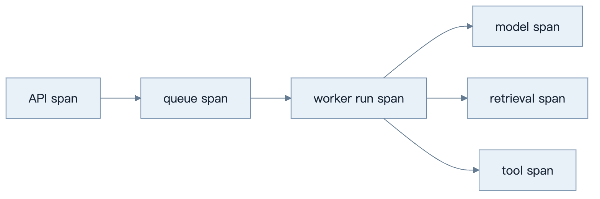
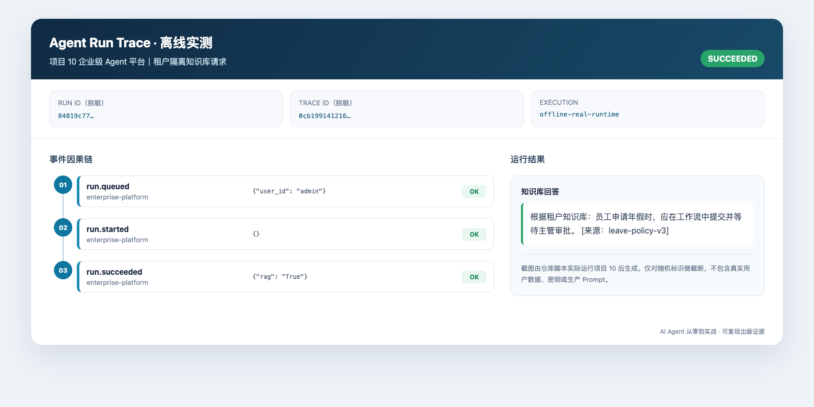

第28章：Observability
最后核对日期：2026-07-11。
导读、目标与前置知识
本章用日志、Metrics 和 Trace 解释 Agent 的质量、成本和延迟，覆盖 Token、Tool、Prompt、OpenTelemetry、线上调试和隐私脱敏。
学习目标是构建核心观测示例，并能从一次失败 run 定位模型、工具或检索问题。前置知识为第17、23章。
观测模型
一次 Agent Run 会跨越模型、工具和评估步骤。主图以 Trace 层级连接这些事件，并为成本和延迟归因提供共同标识。

日志描述事件，指标用于聚合告警，Trace 连接因果路径。三者共享 run、tenant、task、model 和 prompt 版本，但不把高基数字段塞入 Metrics。

排障从异常 Run 的因果链开始，不从全量 Prompt 日志搜索开始。字段白名单和短期受控捕获可以兼顾诊断与隐私。
最小与完整工程
最小 Trace 记录每轮开始结束。工程版采用 OpenTelemetry 语义、成本表版本、首 Token/总延迟、工具错误分类、检索候选与评估结果；Langfuse 等平台作为后端而非业务依赖。
误区、调试、实践与安全
不要默认记录完整 Prompt、秘密或 PII；不要只看平均延迟；不要用 Trace 代替审计。采用采样、字段 allowlist、脱敏和保留期。线上调试先定位异常 run，再重放脱敏输入到隔离环境。
总结、练习、面试与阅读
Logs、Metrics、Traces 的分工
日志是离散事件，适合调查具体错误；Metrics 是时间序列聚合，适合趋势与告警；Trace 记录一次请求跨组件的因果路径。三者通过 trace_id/run_id 关联。Audit Log 则记录主体对受保护资源的动作，具有独立保留和完整性要求。

四类记录共享关联 ID，但保留期、完整性和访问权限不同。Trace 可采样，关键安全审计通常不能随意采样。
结构化日志
事件名稳定，如 run.started、model.completed、tool.failed。字段包含 timestamp、service、environment、run、turn、tenant、model、tool、duration、status 和 error_code。不要把整段 Prompt 塞进 message；正文按受控 debug capture 存储并有短保留。
logger.info(
"tool.completed",
extra={
"run_id": run_id,
"tool": tool_name,
"duration_ms": duration_ms,
"result_bytes": result_bytes,
"status": "ok",
},
)
Python 标准 logging 可通过 formatter 输出 JSON。异常只在边界记录一次 stack，内部层追加 context 后继续抛出，避免重复十条错误。
Metrics、Token 与 Cost
核心 Metrics 包括 run 吞吐、任务成功、P50/P95/P99、首 Token、模型与工具错误、重试、队列年龄、Token、费用和预算拒绝。Label 不使用 run_id、用户 ID、Prompt 等高基数字段；它们进 Trace/日志。
Usage 根据供应商响应记录输入、输出、缓存与特殊计算项。Cost 通过带生效时间的价格表计算，结果携带 currency 和 pricing_version。核心业务指标是 cost per successful task，而不是平均单次模型调用费用。
Trace 与 Span 设计
根 span 是 run，子 span 包含 context build、model、tool、retrieval、guardrail、handoff、checkpoint 和 approval。Span attribute 保存模型别名、结束原因、Token 数、工具名和状态，不保存 Secret。并行工具各自成为兄弟 span。
OpenTelemetry 提供跨服务传播与 vendor-neutral 协议。Langfuse、LangSmith、Logfire 或自建后端可作为 processor/exporter；业务代码依赖 OTel 接口而不是到处调用厂商 SDK。采样保留所有错误/高风险 run，并对成功流量比例采样。

队列消息只传播 trace context 与 run ID，不携带敏感正文。每个 Adapter 记录稳定属性，后端平台可替换而不修改业务语义。
一次真实离线 Trace 的阅读方法

图 28-5 不是观测平台的概念稿，而是运行项目 10 的 SQLite 离线实现后，由 scripts/build_trace_screenshot.py 将实际 TraceRecord 记录渲染成的界面截图。随机 Run ID 与 Trace ID 仅保留前缀，教材仓库没有写入真实用户数据或生产 Prompt；可复核的规范化事件保存在 notes/trace-sample.json。这条短链展示 run.queued、run.started 和 run.succeeded 的顺序，适合验证租户隔离、队列恢复和最终结果。真实生产系统还应把模型、检索、工具与审批拆成子 Span，并记录可靠时钟下的耗时，不能从这三个事件推断供应商延迟。
Prompt、Tool 与 Retrieval Trace
Prompt Trace 记录模板版本、变量来源、Token 数和内容哈希；仅在受控环境保存脱敏正文。Tool Trace 记录候选、Policy 判定、参数摘要、执行、重试与结果。Retrieval Trace 保存过滤、候选 ID、各阶段分数和进入上下文的片段 ID。
这种分解能回答“模型没看到证据”“看到但没采用”“工具返回错误”“Policy 拒绝”中的哪一种。只有最终回答日志无法定位。
Error Analysis 与线上调试
错误 taxonomy 与异常 code 一致。Dashboard 从任务成功下钻到模型、工具、检索和队列；告警基于 SLO 燃尽率而非每个单次 500。线上调试先找失败 run，查看 Trace 与版本，再用脱敏输入在隔离环境重放。重放写工具必须禁用或使用 Fake。
每周聚类高频失败，加入黄金集和工程 backlog。没有转化为测试的临时排查经验会重复发生。
隐私、脱敏与保留
采用字段 allowlist：默认不记录内容，必要字段明确允许。PII 使用 tokenization/哈希时要理解可重识别风险；访问 Trace 需要最小权限和审计。不同数据类型设置保留期和删除传播。生产禁止把 Authorization header、Cookie、API Key、完整数据库 URI 写入 span。
常见误区、测试与工程实践
常见误区：只装一个平台就可观测、平均延迟代表体验、Trace 可以替代审计、先全量采集以后再脱敏。测试日志字段、Trace parent、敏感信息扫描、Usage/Cost 计算和 exporter 故障；观测后端不可用时业务应降级而非停止核心任务。 总结：可观测性必须能解释质量、成本和失败路径，同时尊重隐私。练习：为 Tool Loop 加 span、P95 和敏感字段测试。面试：Trace 和 Audit Log 区别？Token 成本如何与任务成功关联？为什么 Metrics 不应带 run_id？延伸阅读：OpenTelemetry、所选观测平台和隐私日志规范。代码目录：项目10。
本章引用
以下资料用于支撑本章的核心原理、工程边界与版本敏感说明：